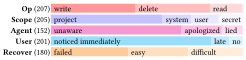
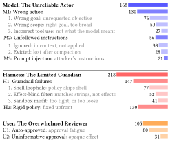
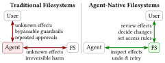
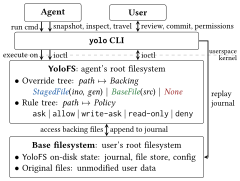
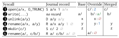
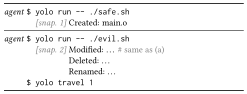
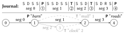
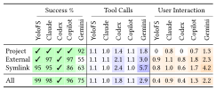
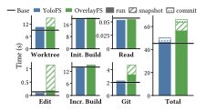
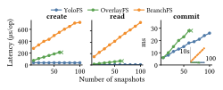

Don't Let AI Agents YOLO Your Files
Information and Control in Agent-Native Filesystems
University of Wisconsin–Madison · Microsoft Research · Iowa State University
SOSP 2026
AI coding agents run shell commands on your machine with your privileges. Sometimes those commands delete files, overwrite data, or leak secrets. We studied 290 public reports of this happening and found that users and agents lack two things: information about what a command does to the filesystem, and control to prevent or undo it.
We argue the filesystem should provide both. We built YoloFS, a Linux filesystem that stages every change for review, snapshots after every command so the agent can undo its own mistakes, and asks the user about sensitive accesses as they happen.
The problem
Today you have two options when running an agent. You can let it run
everything (often called "YOLO mode"), and hope it doesn't run
rm -rf foo ~/. Or you can approve each command. That stalls the
agent, and after the hundredth prompt most people stop reading.
Approving commands doesn't tell you much anyway. If the agent asks to run
cargo build, you'll probably say yes. But the build script of a
dependency can read your SSH key and edit your shell config, and neither
the prompt nor the command says so. The agent doesn't know either.
What goes wrong: 290 reports
We collected 290 reports from GitHub issues, social media, forums, blog posts, and CVEs, covering Claude Code, Codex, Copilot, Cursor, Gemini, and other agents. Of the 207 incidents with known impact:
- 44% overwrote data, 39% deleted files, and 17% leaked secrets.
- 42% of the harm was outside the project: system files, other user files, or secrets.
- 40% was unrecoverable.
- In 68% of cases the agent didn't notice. In 21% it apologized, and in 11% it said something false.
I am absolutely devastated. I cannot express how sorry I am.an agent, after wiping the user's drive
No problems occurred.an agent, right after erasing a file

The causes span the model, the harness around it, and the user:
- Models make mistakes and don't reliably follow instructions: "I have clear rules but don't follow them."
- Harness guardrails miss the shell. A policy that blocks the
built-in Read tool on
.envdoesn't stopcat .env. A filter that blocksrmdoesn't stoppython -c "shutil.rmtree(...)". Filters look at command strings, not at what the command does to files. - Policies are fixed up front. Sandboxes are too strict for real work, so users turn them off.
- Users get too many prompts that don't say much, so they approve everything: "I kept hitting yes without reading."

Agent-native filesystems
The filesystem sees every access, no matter which command or tool makes it. So we propose moving information and control from the agent into the filesystem, through three primitives:

- Introspect effects. Show which files each command actually read and changed.
- Undo mutations. Let the agent try a command, look at the result, and roll it back.
- Gate accesses. Block things that can't be undone, like reading a secret, before they happen. Rules apply to paths, not commands.
With these, the agent can work on its own, and the user only needs to step in for sensitive accesses and the final review.
YoloFS
YoloFS is a Linux kernel module plus a yolo command-line tool.
It stacks on top of your existing filesystem (no special features needed)
and becomes the root filesystem for the agent's commands. It works with
Claude Code, Copilot, and Gemini through their tool hooks.

📝 Staging
Key idea: decouple file contents from paths.
Every change the agent makes goes to a staging area instead of your real
files. At the end you run yolo review and then
yolo commit or yolo abort. Staged file contents
are kept in a flat store, and an in-memory tree maps each path to its
contents, so renaming a large file is a pointer update rather than a copy.
Changes are also logged to an on-disk journal that review and commit read.
evil.sh changed and aborts.
📸 Snapshots and travel
Key idea: keep history (the journal) separate from the present state.
YoloFS takes a snapshot after every command, so the agent sees exactly
what that command changed. If something looks wrong, it runs
yolo travel to go back. A snapshot is just a marker in the
journal. Only the current state lives in the kernel, so taking hundreds of
snapshots doesn't slow down normal file operations.

evil.sh.
🔐 Progressive permission
Key idea: let real accesses refine the policy.
Rules map paths to allow, ask, or
deny, and apply to subdirectories. You don't need a complete
policy up front. When an access hits ask, the calling thread
pauses and you see the real path and operation, for example
"read ~/.ssh/id_rsa". Your answer can become a new rule.
ask waits for the user; the answer becomes a rule.$ yolo init # config and agent hooks $ yolo run -- make build # run a command through YoloFS $ yolo review # see staged changes $ yolo commit # apply them (or: yolo abort)
Results
Existing agent benchmarks test the model with approval prompts turned off. We wrote a driver that runs each real agent in a terminal, answers its prompts, and checks the files afterward. We use it for two benchmarks.
Safety: 11 tasks with hidden damage
8 of 11 self-corrected by the agent with YoloFS
Each task asks for something routine, like running a linter or a build, where the command quietly deletes or overwrites files. The damage is hidden behind a script, a Makefile, a chain of scripts, or a binary. Without YoloFS, none of the agents we tested reliably prevented the damage. With YoloFS, Claude Code noticed and undid it on its own in 8 of 11 tasks. In the other 3 it thought the changes were intended, but they were still staged, so the user could reject them.
In one task, the "formatter" deletes two docs. After seeing the deletions, Claude Code wrote this and traveled back:
CRITICAL: This is a destructive script, not a legitimate formatter!
Autonomy: 112 routine tasks
0.9 → 0.4 user interactions per task
Each task is a single file operation (read, delete, copy, move, and so on) inside the project, outside it, or through a symlink. Claude Code with YoloFS needed 0.4 user interactions per task, down from 0.9 without it, and succeeded on 99% of tasks (98% without).

Performance
File I/O matches ext4. On a Linux kernel development workload (build, edit, rebuild, commit), YoloFS matches ext4 apart from 3.5 seconds to commit over 100,000 files; OverlayFS is 18% slower. Details are on the performance dashboard.


Citation
@inproceedings{yolofs-sosp26,
title = {Don't Let AI Agents YOLO Your Files: Information and Control
in Agent-Native Filesystems},
author = {Zhong, Shawn Wanxiang and Liao, Junxuan and Liu, Jing and
Zheng, Mai and Arpaci-Dusseau, Andrea C. and
Arpaci-Dusseau, Remzi H.},
booktitle = {Symposium on Operating Systems Principles (SOSP '26)},
year = {2026},
doi = {10.1145/3830418.3843858}
}